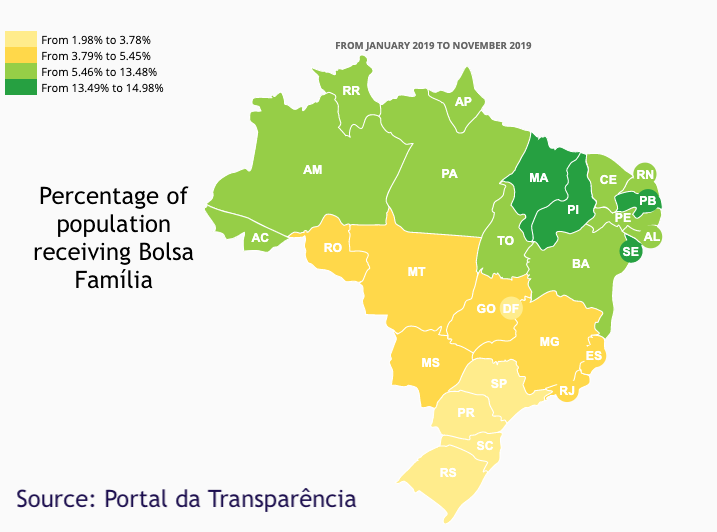

Bolsa Família is a 'Conditional Cash Transfer Program' which provides financial aid to poor brazilian families.
The conditional part of the program ensures that the children who the program aims to support, attend school and are vaccinated.6
48 million people are supported by the program.
Bolsa Família currently has two brackets:
In 2006 the Center for Political Studies of the Getulio Vargas Foundation has published a study showing the reduction of poverty from “28.2% in 2003 to 22.7% last year, a reduction of 19.18%”8 
| # | Brazil |
|---|---|
| Population [2018] | 209,469,3331 |
| Population under National Poverty Line (%) [2017] | 54 mil (26.5 %)2 |
| Population under World Bank $1.90 Absolute Poverty Line (%) [2017] | 9.9 mil (4.8%)3 |
| National Poverty Line Value (USD) | N/A |
| Average Annual Income (USD) [2018] | $6,5234 |
| GDP per Capita PPP (USD) [2018] | $16,0685 |